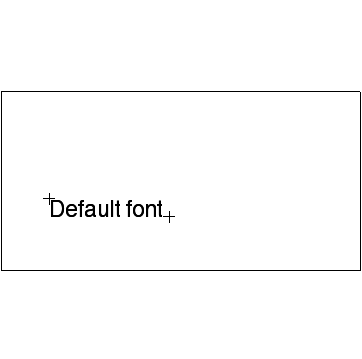

| Source image | Reference image |
|---|---|
 |
This test uses the ACI file to set the default font to "Arial". The CGM file displayed on the left contains no Fontlist and a single restricted text element. The image on the right shows the CGM rendered with Arial font.